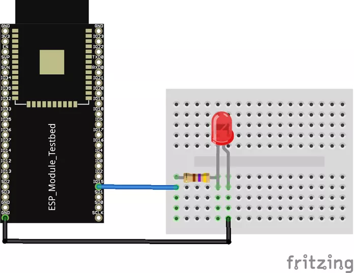

Programando o ESP32 para receber comandos via serial
Para conectarmos o ESP32 com o ruby, primeiramente você tem que configurar sua IDE Arduino para o ESP32 e enviar o código do procotolo FirmataESP32 para a placa, assim ela irá receber comandos via serial. Para fazer isso, siga os passos:
Conecte o ESP32 no seu computador.
Abra a sua IDE Arduino.
Para usar e programar ESP32 na IDE do Arduino, precisamos primeiro que ele reconheça os modelos da placa.
Para isso, primeiramente devemos ir em Arquivo, ir até Preferências e colar a URL abaixo no campo de URLs adicionais:
https://dl.espressif.com/dl/package_esp32_index.json
Com isso, permitimos que a IDE acesse uma pequena “base de dados” no formato .json que contém a configuração de inúmeras placas.
Após isso, devemos acessar o menu Ferramentas -> Placa -> Gerenciador de Placas.
Nele, pesquise por esp32 na caixa de pesquisa. Em seguida, instale a versão mais recente do driver que irá aparecer: esp32 by Espressif Systems.
Feito isso, vá até Ferramente -> Placa selecione a placa “ESP32 Dev Module”, no menu de placas, para programar na ESP.
Baixe o protocolo StandardFirmataESP32 aqui.
Vá no diretório que você instalou a IDE Arduino e entre na pasta dela.
Vá em libraries -> Firmata -> examples
Dentro da pasta examples, extraia a pasta do StandardFirmataESP32 que você baixou.
Volte para IDE Arduino.
Selecione a porta em que a placa está na opção porta (geralmente ela é identificada como ttyUSB0).
Vá na opção Arquivos, selecione a opção Exemplos e vá até a opção StandardFirmataESP32.
Envie para a placa o código que foi gerado quando você clicou na opção.
Após realizar esses passos, a sua placa estará "escutando" comandos que serão enviados via serial, pois o código do StandardFirmataESP32 fica rodando na placa e permite que comandos via serial sejam passados e executados na placa.
Realizando a conexão do ruby e o ESP32
Monte esse circuito:
Abra o terminal e insira o comando: gort scan serial
Veja a porta que a placa está conectada (geralmente ela é identificada como ttyUSB0).
Abra o VS Code e crie um arquivo com o nome blink_led_esp32.rb, por exemplo.
Insira o seguinte código:
require 'rubygems'
require 'arduino_firmata'
arduino = ArduinoFirmata.connect "/dev/ttyUSB0"
#ACENDER E DESLIGAR O LED
arduino.pin_mode 10, ArduinoFirmata::OUTPUT
stat = true
loop do
puts stat
arduino.digital_write 10, stat
stat = !stat
sleep 1
end
Abra o terminal do VS Code e execute o código: ruby blink_led_esp32.rb
Veja o resultado.
Pronto! A conexão do ruby com o ESP32 através do framework foi realizada com sucesso. Agora você pode fazer diferentes circuitos e executar o código através do ruby. Para mais exemplos, vá até a aba Exemplos.